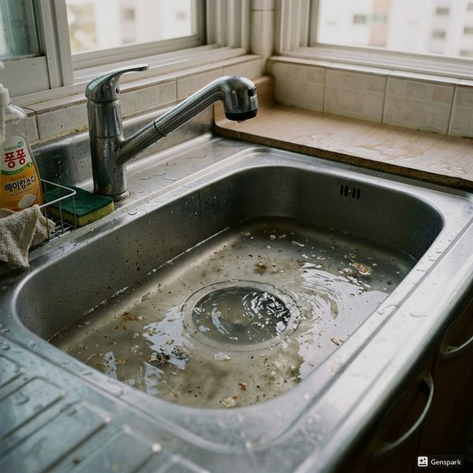
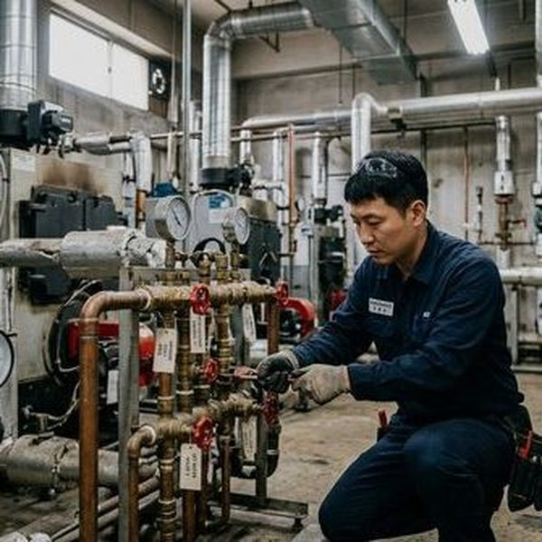
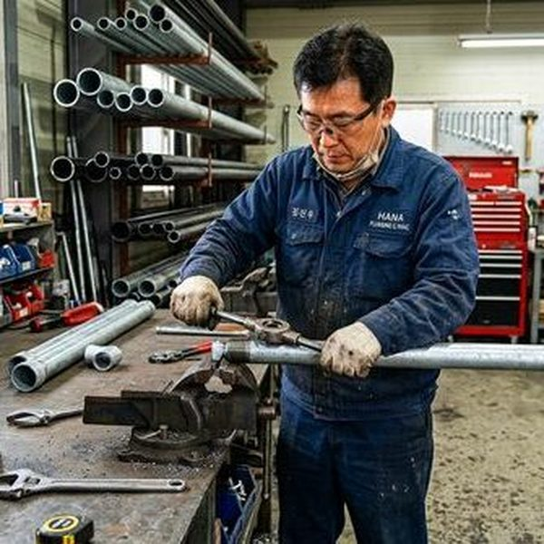

봉수 트랩이란 무엇인가
봉수 트랩(Water Seal Trap)은 배수관과 실내 공간 사이에 물을 가두어 하수관의 악취와 해충이 실내로 올라오는 것을 차단하는 장치입니다. U자형 또는 P자형, S자형 배관 구조로 되어 있으며, 굴곡 부분에 항상 물이 고여 있어 하수 가스를 차단합니다. 이 고여 있는 물을 '봉수(封水)'라고 합니다. 봉수의 적정 깊이는 50~100mm이며, 이 물이 증발하거나 빨려나가면 악취가 발생합니다. 장기간 사용하지 않는 배수구에서 냄새가 나는 것은 봉수가 증발했기 때문입니다.

봉수가 파괴되는 원인과 해결법
봉수가 파괴되는 주요 원인은 네 가지입니다. 첫째, 장기간 미사용으로 인한 자연 증발입니다. 둘째, 다른 배수구에서의 대량 배수로 인한 사이펀 현상(흡입)입니다. 셋째, 통기관 불량으로 인한 음압 발생입니다. 넷째, 트랩 자체의 파손이나 이물질 축적입니다. 해결법은 원인에 따라 다릅니다. 증발이 원인이면 주기적으로 물을 흘려주면 됩니다. 사이펀 현상이나 통기 불량은 배관 구조적 문제이므로 전문가 진단이 필요합니다. 제우스시설관리는 내시경 카메라로 트랩 상태를 직접 확인하고, 근본적인 해결책을 제시합니다. 28분 내 출동 서비스로 악취 문제를 빠르게 해결합니다.

자주 묻는 질문
Q. 봉수 트랩에 기름을 부으면 증발 방지가 되나요?
A. 식용유를 소량 부어 수면 위에 유막을 형성하면 증발을 늦출 수 있지만, 장기적으로는 기름이 배관을 막을 수 있어 권장하지 않습니다.
Q. 모든 배수구에 봉수 트랩이 있나요?
A. 건축법상 모든 배수구에 트랩 설치가 의무이지만, 오래된 건물이나 불법 시공된 경우 트랩이 없거나 훼손된 경우가 있습니다.